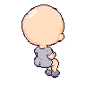

모모·루루 · 새 베이스 뒤쪽 앉기
의상 적용 · 96×96 · NE / NW
같은 접힌 다리 자세에 각자의 원피스·소매·허리 리본을 맞췄습니다. 머리 도트는 기존 그림을 그대로 옮겼습니다.
게임의 뒤를 보는 시소·테이블 좌석에도 연결했습니다.
모모 · 뒤오른쪽 NE ↗
모모 · 뒤왼쪽 NW ↖
루루 · 뒤오른쪽 NE ↗
루루 · 뒤왼쪽 NW ↖
사용한 베이스
발과 정강이의 모양을 유지하고
양말·갈색 신발을 입혔습니다.


이전 뒤쪽 좌석 그림과 비교
PNG·3레이어 Pixelorama 원본 ZIP · 제작 기록 · 의상 초안 지시문